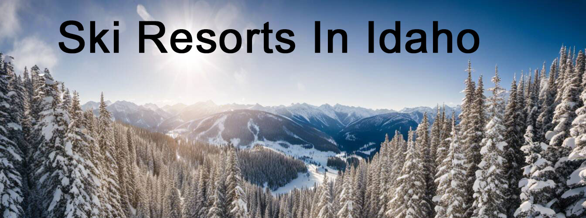
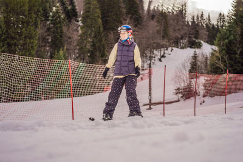
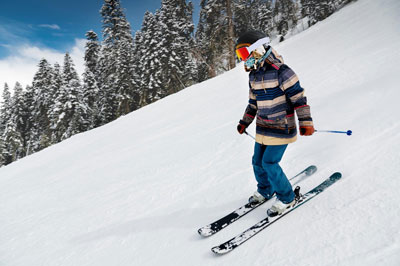
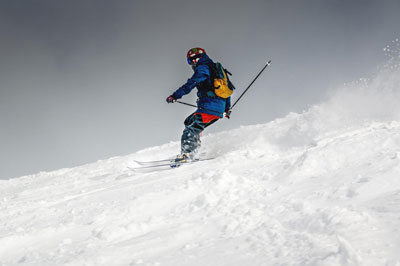

Escape into the winter wonderland of Boise, Idaho, where powdery slopes, glades, and terrain parks beckon adventure seekers and cozy retreats provide a restorative haven. Whether you're an expert seasoned skier or a snowboard enthusiast embarking on your first mountain expedition, Idaho's world-class ski resorts offer experiences that ignite exhilaration and cultivate unforgettable memories. Prepare to be captivated as we explore groomed trails, drive through knee-deep backcountry, and wander among forested paths under the canopy of trees in our Ultimate Guide to Ski Resorts in Idaho: Where to Ski and Stay. Each turn down these snowy paths in the welcoming ski area is an exciting revelation, setting the pace for an extraordinary winter holiday. Buckle up your ski boots; it's time to navigate the scenic crest of Idaho's frosty peaks!
Boise, Idaho, offers a variety of fantastic ski resorts for winter enthusiasts. Some popular options include Sun Valley, Schweitzer Mountain Resort, Bogus Basin, and Tamarack Ski Resort. Each resort offers unique slopes, amenities, and breathtaking mountain views, ensuring a memorable skiing or snowboarding experience.

Amid the stunning mountain ranges and abundant snowfall, lies Boise, a dream destination for ski and snowboard experts and enthusiasts alike. The state boasts several world-class ski resorts that offer thrilling slopes, breathtaking views, and top-notch amenities. Sprinkle in the thrill in snowboarding among the trees, and you've got a perfect skiing holiday!
From the famous Sun Valley Resort in the heart of the Rocky Mountains to the hidden gem Brundage Mountain Resort, whether you're a seasoned skier or an expert snowboard rider, each ski resort in Idaho offers a unique experience. Sun Valley is often regarded as one of America's premier ski destinations, attracting celebrities and adventurers alike, all drawn in by its versatile terrain parks. With its extensive trail network catering to all skill levels and luxurious accommodations, it promises an unforgettable skiing getaway.
On the other end, Brundage Mountain Resort provides a more intimate and laid-back atmosphere. Nestled in the Payette National Forest, this resort is known for its powder-filled slopes, exciting glades and friendly local vibe. A mere drive away from Boise, it's the perfect place to escape the crowds and immerse yourself in nature while enjoying excellent skiing conditions.
Now that we've covered some of the ski resorts in Idaho, let's buckle up and drive through to other popular glades and terrain parks within the state where these resorts are located.
Idaho is a must-visit destination for ski enthusiasts, with its stunning mountain ranges and abundant snowfall. The state offers several world-class ski resorts that provide thrilling slopes, breathtaking views, and top-notch amenities. From the famous Sun Valley Resort to the hidden gem Brundage Mountain Resort, each ski resort in Idaho offers a unique experience.
Sun Valley Resort is one of America's premier ski destinations, attracting celebrities and adventurers alike. With its extensive trail network catering to all skill levels and luxurious accommodations, it promises an unforgettable skiing getaway. On the other hand, Brundage Mountain Resort provides a more intimate and laid-back atmosphere, perfect for escaping the crowds and enjoying excellent skiing conditions.
Schweitzer Mountain Resort near Sandpoint offers panoramic views of Lake Pend Oreille, while Tamarack Resort near Donnelly features diverse terrain and a family-friendly atmosphere. No matter your skiing preference, Idaho's ski resorts have something for everyone.
It's also worth noting that these resorts are located in popular areas within the state, allowing visitors to explore the beautiful surroundings. With its stunning natural beauty and excellent skiing opportunities, Idaho is a dream destination for any ski lover in 2023.
Idaho is home to several renowned ski areas that captivate winter sports enthusiasts with their impressive slopes and natural beauty. These areas not only provide access to multiple ski resorts but also offer various recreational activities beyond skiing and snowboarding, like exploring the glades and terrain parks.
One such popular area is Ketchum/Sun Valley. Located in central Idaho's Wood River Valley, this region features the iconic Sun Valley Resort and offers a perfect blend of small-town charm and world-class amenities. In addition to skiing, visitors can enjoy ice skating, snowshoeing, and even catch live performances at the Sun Valley Pavilion.
For those in search of a winter wonderland, McCall and the surrounding area are ideal. Situated on the shores of Payette Lake, McCall is a picturesque town offering easy access to both Brundage Mountain Resort and Tamarack Resort.
On the cusp of a grand vacation, visitors can partake in activities like snowmobiling, ice fishing, or experiencing a relaxing soak in one of the area's natural hot springs. For the more adventurous types, they may even opt to experience the thrill of night skiing under the stars or brave the backcountry terrain, utilizing the operator's chairlift systems and expert guidance.
Other popular ski areas in Idaho include Sandpoint/Schweitzer Mountain and Driggs/Grand Targhee Resort. They both cater to experts and beginners alike with a variety of equipment rental options available at their ski lodges. The former combines the charms of Sandpoint's lakeside location with the thrilling chairlift-serviced slopes of Schweitzer Mountain Resort, while the latter in Driggs provides a unique experience near the breathtaking backcountry terrain on the western side of the Teton Mountains.
Now that we've explored some popular ski areas in Idaho and available amenities like chairlifts, equipment rentals, and lodges, it's time to delve into ski passes and pricing options available for those planning their visit.
Idaho's climate sets the stage for a winter wonderland that avid skiers and snowboarders can't resist. With its high elevation and diverse terrain, including both groomed runs and challenging backcountry terrain, this state experiences abundant snowfall, perfect for carving through powdery slopes.
Idaho falls within the Intermountain West region, known for its semi-arid climate. The typical winter temperatures range between 20°F (-7°C) and 40°F (4°C), making it ideal for cold weather enthusiasts seeking excellent skiing conditions for a dream vacation on the slopes, complete with night skiing opportunities.
The mountainous regions of Idaho are blessed with ample snowfall throughout winter. For example, mountain peaks like Bogus Basin receive an average annual snowfall of over 250 inches, ensuring a consistently good base to enjoy your favorite winter activities, including exploring the backcountry terrain.
Imagine waking up in the morning to gaze out your window and seeing the landscape adorned in a shimmering white blanket of freshly fallen snow. Excitement builds as you prepare for another day on the slopes, knowing that Idaho's climate ensures exceptional skiing conditions and an unforgettable experience.
While hitting the slopes is undoubtedly the highlight of any ski trip, there's more to be explored once you've hung up your skis for the day. In Idaho, après-skiing activities abound, ensuring that your adventure continues long after the last run.
Immerse yourself in the vibrant atmosphere of local mountain towns, where you can indulge in delicious cuisine and sample craft beers at charming breweries. After a day of exploring the challenging backcountry terrain and descending the peaks under the sparkly night skiing lights, retire to the welcoming comfort of the lodges. For those seeking relaxation, unwind in natural hot springs dotting the area, providing a soothing soak surrounded by snow-capped mountains. Embark on scenic snowshoeing or cross-country skiing trails, allowing you to explore the serene winter landscapes at a slower pace.
Feeling adventurous? Take part in thrilling snowmobiling excursions or try your hand at ice climbing. And if you're looking for family-friendly entertainment, many resorts offer ice skating rinks and snow tubing hills, guaranteeing laughter and fun for all ages. Test your abilities at one of the exciting terrain parks or enroll in a ski school to up your skills during the ski season.
Whether you choose to unwind and recharge or seek adrenaline-fueled activities, Idaho's après-ski scene ensures that your ski getaway is memorable both on and off the slopes. As the ski day ends, indulge in range of dining options available from gourmet cuisine to cozy cafés, or explore the trail map for next day's adventure.
When it comes to finding the perfect place to rest your head after a day of thrilling skiing adventures in Idaho, there are various accommodation options available to suit every traveler's preferences. From slope-side lodges for instant access to the mountain, to warm bed & breakfasts nestled within the local town, there is something for everyone.
For those seeking luxury and indulgence, Idaho boasts several high-end resorts that offer unparalleled comfort and exceptional amenities. Picture yourself retreating to a luxurious mountain lodge nestled amidst picturesque surroundings. These resorts often feature cozy fireplaces, spa facilities, fine dining restaurants serving gourmet cuisine, and ski school programs to enhance your skiing abilities, not to mention exemplary customer service to ensure an unforgettable stay.
Additionally, many resorts offer slope-side accommodations where you can step out of your door and onto the slopes within minutes. These convenient options provide easy access to chairlifts and ski runs, allowing you to maximize your time on the mountain. You will also be within walking distance from the terrain park and the dining options within the resort.
If you're traveling on a budget or prefer a more laid-back atmosphere, Idaho also offers a variety of affordable lodging options such as cozy cabins, charming bed and breakfasts, and comfortable hotels. These accommodations still provide comfort and convenience while allowing you to save some money for additional adventures during the ski season. And don't worry about getting lost; every lodging option provides a trail map of the surrounding ski area.
No matter which accommodation option you choose, the welcoming atmosphere and breathtaking mountain views will make your Idaho ski trip even more memorable. Pick up a trail map, put on your gear, and prepare to explore all that Idaho's ski season has to offer!
When it comes to luxury ski resorts in Idaho, the options are as breathtaking as the mountain views themselves. Whether you're seeking opulent accommodations or exclusive amenities, these resorts have it all. One top-notch option is "Resort A", nestled in the heart of the snow-covered mountains. This resort boasts spacious and elegantly decorated rooms with plush bedding, stunning panoramic views, and top-tier concierge service. After a day on the slopes, pamper yourself at their luxurious spa, dine at one of their upscale restaurants, or visit the terrain park.
If you're planning a ski adventure in Idaho but need to stick to a budget, fear not! There are several options for affordable lodging that won't compromise on comfort or proximity to the slopes. For instance, "Lodge A" offers cozy yet affordable rooms without sacrificing convenience. Located just minutes away from the ski lifts and terrain park, you can enjoy quick access to the powder without breaking the bank. Additionally, they provide amenities like hot tubs, complimentary breakfast, a ski school program to tune up your skills, and numerous dining options to enhance your stay.
If you're planning a ski adventure in Idaho but need to stick to a budget, fear not! There are several options for affordable lodging that won't compromise on comfort or proximity to the slopes. For instance, "Lodge A" offers cozy yet affordable rooms without sacrificing convenience. Located just minutes away from the ski lifts, you can enjoy quick access to the powder without breaking the bank. Additionally, they provide amenities like hot tubs and complimentary breakfast to enhance your stay. Another wallet-friendly option is "Lodge B", known for its comfortable rooms at affordable rates. Situated in a charming alpine village, this lodge provides a cozy atmosphere perfect for après-ski relaxation by the fireplace.